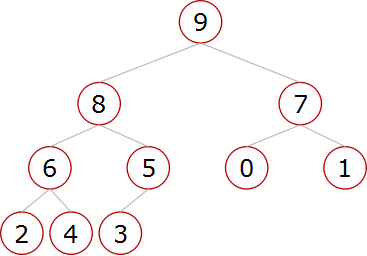
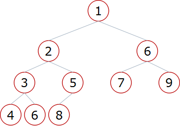
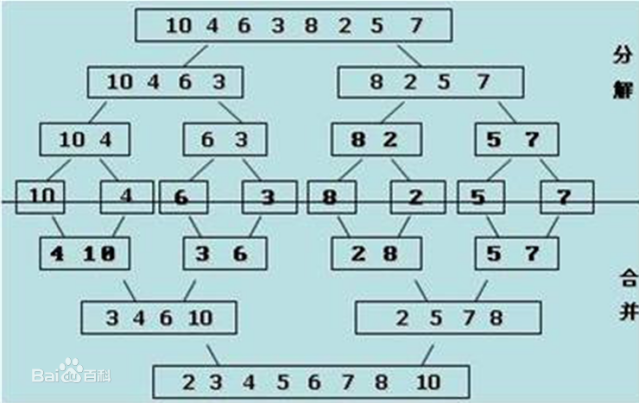
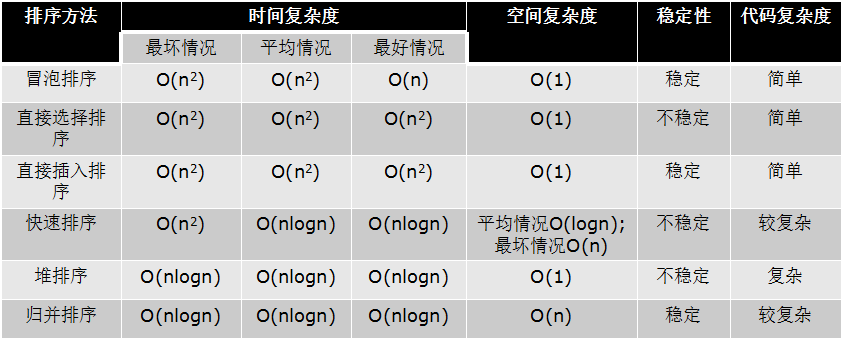

什么是算法?
算法(Algorithm):一个计算过程,解决问题的方法
时间复杂度
- 时间复杂度 :用来评估算法运行效率的一个东西
- 一般来说,时间复杂度高的算法比时间复杂度低的算法慢
- 常见的时间复杂度(按照效率排序
- O(1)<O(logn)<O(n)<O(nlogn)<O(n2)<O(n2logn)<O(n3)
- 不常见的时间复杂度
- O(n!) O(2n) O(nn)....
- 如何一眼判断时间复杂度
- 循环减半的过程O(logn)
- 几次循环就是n的几次方的复杂度
print('hello World') # O(1)
for i in range(n): # O(n)
print('hello world')
for i in range(n): #O(n²)
for j in range(n):
print('hello world')
for i in range(n): #O(n³)
for j in range(n):
for k in range(n):
print('hello world')
空间复杂度
空间复杂度: 用来评估算法内存占用大小的一个式子
二分查找
代码:
# 普通的查找方式
def linear_search(data_set,value):
for i in range(len(data_set)): # 时间复杂度是O(n)
if data_set[i] == value:
return i
return
# 二分查找
# 循环版本
def bin_search(data_set,value):
low = 0
high = len(data_set) - 1
while low <= high:
mid = (low + high) // 2
if data_set[mid] == value: # 时间复杂度O(logn)
return mid
elif data_set[mid] > value:
high = mid-1
else:
low = mid + 1
# 递归版本
def bin_search_rec(data_set,value,low,high):
if low <= high:
mid = (low + high) // 2
if data_set[mid] == value:
return mid
elif data_set[mid] > value:
return bin_search_rec(data_set,value,low,mid-1)
else:
return bin_search_rec(data_set,value,mid+1,high)
else:
return
冒泡排序
冒泡排序思路: 首先,列表两个相邻的数,如果前边的比后边的大,那么交换这两个数,如果不大,那就不需要交换
代码关键点: 1.趟 2.无序区
```python
# 冒泡算法 时间复杂度:O(n²)
def bubble_sort(li):
for i in range(len(li)):
for j in range(i+1,len(li)):
if li[i] > li[j]:
li[i], li[j] = li[j], li[i]
# 冒泡算法优化
# 如果冒泡排序中执行一趟而没有交换，则列表已经是有序状态，可以直接结束算法
def bubble_sort(li):
for i in range(len(li)):
exchange = False
for j in range(i+1,len(li)):
if li[i] > li[j]:
li[i], li[j] = li[j], li[i]
exchange = True
if not exchange:
return
```
选择排序
选择排序思路:
-
一趟遍历记录最小的数放在第一个位置
-
再一趟遍历记录剩余列表中最小的数，继续放置
代码关键点: 1.无序区 2.最小数的位置
# 选择排序代码 时间复杂度:O(n²)
def select_sort(li):
for i in range(len(li)):
min_loc = i
for j in range(i+1,len(li)):
if li[j] < li[min_loc]:
min_loc = j
if min_loc != i:
li[i],li[min_loc] = li[min_loc],li[i]
插入排序
插入排序思路
列表被分为有序区和无序区两部分,最初有序区只有一个元素
每次从无序区选择一个元素,插入到有序区的位置,直到无序区变空
# 插入排序代码 时间复杂度O(n²)
def insert_sort(li):
for i in range(1,len(li)):
tmp = li[i]
j = i - 1
while j>=0 and tmp < li[j]:
li[j+1] = li[j]
j -= 1
li[j+1] = tmp
快速排序
快速排序思路
1.取一个元素p(第一个元素),使元素p归为
2.列表被p分为两部分,左边比p小,右边比p大
3..递归完成排序
# 快速排序 时间复杂度O(nlogn)
def quick_sort(data,left,right):
if left < right:
mid = partition(data,left,right)
quick_sort(data,left,mid-1)
quick_sort(data,mid+1,right)
def partition(data,left,right):
tmp = data[left]
while left < right:
while left < right and data[right] >= tmp:
right -= 1
data[left] = data[right]
while left < right and data[left] <= tmp:
left += 1
data[right] = data[left]
data[left] = tmp
return left
堆排序
树与二叉树的简介
树是一种数据结构 比如：目录结构
树是一种可以递归定义的数据结构
树是由n个节点组成的集合：
- 如果n=0，那这是一棵空树；
- 如果n>0，那存在1个节点作为树的根节点，其他节点可以分为m个集合，每个集合本身又是一棵树。
一些概念:
-
根节点、
-
叶子节点树的深度（高度）
-
树的度孩子节点/父节点
-
子树
两种特殊二叉树
-
满二叉:一个二叉树，如果每一个层的结点数都达到最大值，则这个二叉树就是满二叉树。
-
完全二叉树：叶节点只能出现在最下层和次下层，并且最下面一层的结点都集中在该层最左边的若干位置的二叉树。
二叉树的存储方式:
- 链式存储方式
- 顺序存储方式(列表)
- 父节点和左孩子节点的编号下标有什么关系？ 2i+1 i:代表下标
- 父节点和右孩子节点的编号下标有什么关系？ 2i+2
堆排序
堆:
- 大根堆：一棵完全二叉树，满足任一节点都比其孩子节点大

- 小根堆：一棵完全二叉树，满足任一节点都比其孩子节点小

堆的向下调整性质:
假设:节点的左右子树都是堆，但自身不是堆
当根节点的左右子树都是堆时，可以通过一次向下的调整来将其变换成一个堆
堆排序过程:
- 建立堆
- 得到堆顶元素，为最大元素
- 去掉堆顶，将堆最后一个元素放到堆顶，此时可通过一次调整重新使堆有序。
- 堆顶元素为第二大元素。
- 重复步骤3，直到堆变空。
# 堆排序代码 时间复杂度O(nlogn)
def sift(data,low,high):
i = low
j = 2 * i +1
tmp = data[i]
while j <= high:
if j < high and data[j] < data[j+1]:
j += 1
if tmp < data[j]:
data[i] = data[j]
i = j
j = 2*i+1
else:
break
data[i] = tmp
def heap_sort(data):
n = len(data)
for i in range(n//2-1,-1,-1):
sift(data,i,n-1)
for i in range(n-1,-1,-1):
data[0],data[i] = data[i],data[0]
sift(data,0,i-1)
堆排序--内置模块
- 优先队列：一些元素的集合，POP操作每次执行都会从优先队列中弹出最大（或最小）的元素。
- 堆——优先队列
- Python内置模块——heapq
- heapify(x)
- heappush(heap, item)
- heappop(heap)
- 利用heapq模块实现堆排序
import heapq
def heapsort(li):
h = []
for value in li:
heappush(h, value)
return [heappop(h) for i in range(len(h))]
归并排序
假设现在的列表分两段有序，将其合成为一个有序列表,这种操作称为一次归并
# 归并排序 时间复杂度O(logn) 空间复杂度:O(n)
def merge(li,low,mid,high):
li_tmp = []
i = low
j = mid + 1
while i <= mid and j <= high:
if li[i] < li[j]:
li_tmp.append(li[i])
i += 1
else:
li_tmp.append(li[j])
j += 1
while i <= mid:
li_tmp.append(li[i])
i += 1
while j <= high:
li_tmp.append(li[j])
j += 1
for i in range(len(li_tmp)):
li[i+low] = li_tmp[i]
def merge_sort(li,low,high):
if low < high:
mid = (low + high) // 2
merge_sort(li,low,mid)
merge_sort(li,mid+1,high)
merge(li,low,mid,high)
归并排序实现思路:

- 分解：将列表越分越小，直至分成一个元素。
- 终止条件：一个元素是有序的。
- 合并：将两个有序列表归并，列表越来越大
总结:
一般情况下，就运行时间而言：快速排序 < 归并排序 < 堆排序
三种排序算法的缺点：
- 快速排序：极端情况下排序效率低
- 归并排序：需要额外的内存开销
- 堆排序：在快的排序算法中相对较慢

希尔排序
希尔排序思路:
- 希尔排序是一种分组插入排序算法
- 首先取一个整数d1=n/2，将元素分为d1个组，每组相邻量元素之间距离为d1，在各组内进行直接插入排序
- 取第二个整数d2=d1/2，重复上述分组排序过程，直到di=1，即所有元素在同一组内进行直接插入排序。
- 希尔排序每趟并不使某些元素有序，而是使整体数据越来越接近有序；最后一趟排序使得所有数据有序
# 希尔排序 希尔排序的时间复杂度讨论比较复杂，并且和选取的gap序列有关。
def shell_sort(li):
gap = len(li) // 2
while gap > 0:
for i in range(gap,len(li)):
tmp = li[i]
j = i-gap
while j >= 0 and tmp < li[j]:
li[j + gap] = li[j]
j -= gap
li[j+gap] = tmp
gap //= 2
计数排序
现在有一个列表，已知列表中的数范围都在0到100之间。设计算法在O(n)时间复杂度内将列表进行排序。
创建一个列表，用来统计每个数出现的次数
def count_sort(li,max_num):
count = [0 for i in range(max_num+1)]
for num in li:
count[num] += 1
i = 0
for num , m in enumerate(count):
for j in range(m):
li[i] = num
i += 1
li = [1,2,3,4,5,8,6,3,2,1,4]
count_sort(li,8)
print(li)
桶排序
- 在计数排序中，如果元素的范围比较大（比如在1到1亿之间），如何改造算法？
- 桶排序(Bucket Sort)：首先将元素分在不同的桶中，在对每个桶中的元素排序。
- 桶排序的表现取决于数据的分布。也就是需要对不同数据排序时采取不同的分桶策略。
- 平均情况时间复杂度：O(n+k)
- 最坏情况时间复杂度：O(n2k)
- 空间复杂度：O(nk)
基数排序
- 多关键字排序：加入现在有一个员工表，要求按照薪资排序，年龄相同的员工按照年龄排序。
- 先按照年龄进行排序，再按照薪资进行稳定的排序。
- 对32,13,94,52,17,54,93排序，是否可以看做多关键字排序？
# 基数排序
# 时间复杂度 O(kn)
# 空间复杂度:O(k+n)
# k表示数字位数
def list_to_bucket(li, i):
buckets = [[] for _ in range(10)]
for val in li:
digit = val // (10 ** i) % 10
buckets[digit].append(val)
return buckets
def bucket_to_list(buckets):
li = []
for bucket in buckets:
for val in bucket:
li.append(val)
return li
def radix_sort(li):
max_val = max(li)
i = 0
while 10 ** i <= max_val:
li = bucket_to_list(list_to_bucket(li, i))
i += 1
return li